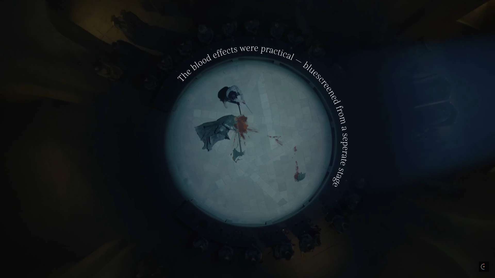
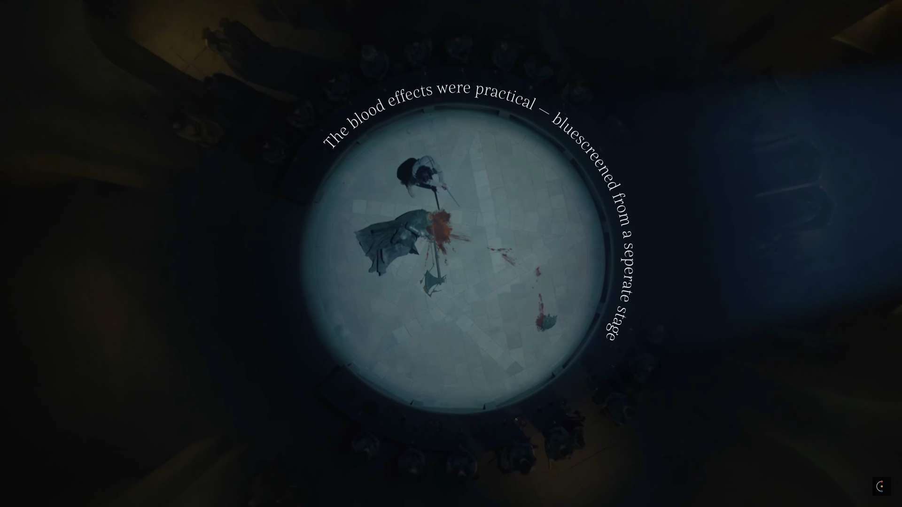
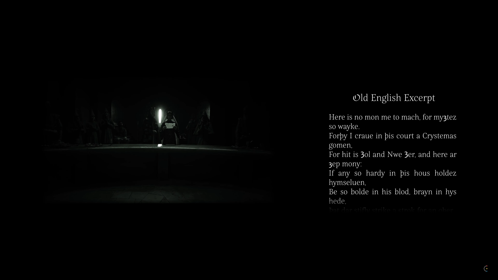

The Green Knight
2023.03.19
Contents
00 |
Contents
01 |
Introduction
02 |
In Retrospect
03 |
Sources and Credits
04 |
Statistics
Introduction
Synopsis and Stills
Arthurian legend is no stranger to reinterpretation — nor should it be. It's a constantly evolving mythos, and with David Lowery's The Green Knight, we have the latest of such. Just like the poem before it, the film follows Gawain as he embarks on a fantastical quest to confront the Green Knight. This retrospective covers the film's narrative, themes, and technical elements.


 

" One Year Hence "

" One Year Hence "

" One Year Hence "
In Retrospect
A Cracked Foundation
The first problem was deciding how to structure the script. The easiest option (in this case, the worst) was chronological order — narrate over the film's plot beat by beat and leave room for tangents where appropriate. For example, in the film's 4th chapter, "a Kindness", Gawain is robbed and left for dead. It's his imagining of the future, shown in 360° panoramic rotation, that provided a perfect jumping-off point to discuss the film's camerawork and visual motifs.


Of course, being the easiest option, it came with its fair share of problems. Following a chronological order led to many boring summarizations: "Gawain did this. Then Gawain did that", and so on until I arrived at something worth talking about. What's more, a discussion on anything, be it art direction, soundtrack, etc., must first consider where it's best featured within the film. Where, for example, are the anachronisms most prominent? The answer to that question, not viewer comprehension or organization, determined where I discussed it in the script. In this case — it was the 7th chapter, "an Exchange of Winnings". This is not to mention that "The Green Knight" is a film for which plot is unimportant; it eschews that in favor of theme, character, and a Medieval travelogue. Why, then, the chronological order? Looking back on it now, I realize it wasn't the best approach. There were exceptions, sure, but it was a driving force behind a lot of what didn't work; among other problems, it lent itself to an overly long and, at times, boring video.
Throwing Everything at the Wall
One consequence of the (near) 38-minute runtime was the approach to editing — it was all over the place. Some edits fit, either within the context of the video or as a reflection of the film (e.g., the circular, rotational motifs). Others did not. Take, for example, the following set of retrospective stills, shown below, showcasing the transition of the 3rd chapter title card from black-and-white to color. Sure, it's "cool" (and I like the transition of the subtitle text alongside it), but it's also unmotivated, inconsistent, and antithetical to the film. The black-and-white in this sequence exists for no other reason than to make this edit; it's uncommon (this is the first use of it, 11 minutes into the video) and it makes no sense in a film for which color is so important.


- and Seeing What Sticks
Another example of form over function, the following image shows the use of guillemets (French quotations, present throughout the entire retrospective) instead of English ones. It's not in and of itself a big deal (and I would do it again), but it is emblematic of a larger problem (see also the inconsistent footage sizings in this same example).
Admittedly, runtime wasn't the only motivating factor behind these decisions — I wanted to try new things, to experiment, to "throw everything at the wall and see what sticks". And I did. Most of the sequences I take issue with are ones I've since iterated on (or plan to) in future projects. For example, in "Häxan", with its approach to still images. It was indulgent — but still an important building block nonetheless; now I'm far more aware of what works and what doesn't.
From Past to Present
Of all the time spent editing this video, most of it was relegated to the first chapter, a roughly 7-minute precursor summarizing the original poem and some of its textual readings — "A Window of Many Colored Glass." The difficulties associated were manifold: how do I sustain a 7-minute discussion on the poem, a discussion that would require the use of numerous still images; how do I make those still images engaging and dynamic; if I am to use footage, what footage do I use? What resulted was an ugly compromise, a repititous cycling of the same few manuscript illustrations, and a narration backgrounded with footage from "The Green Knight" that often contradicted (or was irrelvant to) what was being said. I even included a disclaimer stating as much: "The footage shown during this chapter is not a one-to-one representation of the poem." How embarassing; I was aware of this being an issue in as easly as the scriptwriting stage — but did nothing to solve it.
"
P
e
a
r
l
P
o
e
t
"

"
P
e
a
r
l
P
o
e
t
"
I think I understood from the start that the scope of this video should be broad, should cover the material the film meant to adapt; a discussion on "The Green Knight" necessitated, too, a discussion on "Sir Gawain and the Green Knight", for completeness sake. The "retrospective" title is a catch-all, in that way, accomodating the inclusion of these more secondary elements. So, for as much consternation as this chapter caused me, I don't regret including it. It was, at least, an important learning experience, a headache that I immediately revised in the following retrospective (and will continue to, going forward).
As an aside, the following title cards are two (albeit, minor) elements I'm still happy with. Both make some use of the footage they're overlayed atop of, with the former using an elongated hyphen as a sort of "garrote" or "guillotine" on the Green Knight, a visual representation of the text itself. Integrating it, having it interact with the footage in this way, is something I'd like to explore more of in the future.

Copyright© Challenges
Generally speaking, the split-screen designs are an intentional, stylistic choice. For better or worse, it's an aesthetic I like to follow. But here, in the images shown below (and in some other examples), it was not; instead, rather a reaction to YouTube's CopyrightID system.

The mirroring in the first image, the black-and-white in both — all of these were concessions made in order to upload the video to YouTube. Often it's these longer sequences, unedited snippets from the film, that are most affected, understandably so. But "The Green Knight" was an exception, facing copyright claims throughout, even for heavily edited sequences. It was the constant back-and-forth — edit, export, upload, wait for claims, then repeat all over again — that led me toward "Häxan", a film in the public domain, for the following retrospective.
Sources and Credits
Images, music, and footage are listed in order of first appearance.
Research
- ...
Images
- ...
Music
- ...
Footage
- ...
Disclaimer
This project was created under the Fair Use Doctrine. There is an insubstantial amount of footage used, done so for a creative and educational purpose, and transformative from its original context. All rights belong to their respective owners and no infringement is intended.
Statistics
As of 2024.01.05.
Reach
Date Published:
2023.03.19
View Count:
2,089
Impressions:
56,269
Impressions CTR:
01.90%
Engagement
Avg. View Duration:
07:46 | 20.90%
Comments:
22
Likes:
103
Subscriber Gain:
32